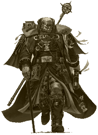
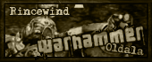

|
Linkek
Mivel
rengeteg Warhammer-rel foglalkozó oldal van a világhálón,
ezért ide csak azokat szedtem össze, amiket
valamilyen szempontból érdekesnek vagy
hasznosnak találtam. A lista tehát közel sem
teljes, de nem is ez a célja, csak ugródeszkául
szolgál a további böngészéshez.
| Trollbarlang
- Magyar site, sok anyaggal és többek közt árlistával
az itthon kapható "babákról".
Nomeg eszméletlen ork dumával. :) Inkvizitor.hu
- Egy nemrégiben indult hazai,
Warhammer-es portál site.
Mordheim
utcái - Remek magyar
nyelvû oldal, rengeteg Mordheim és
Warhammer Fantasy Battle 6th infóval
RPG.hu
Warhammer fórum - Kishazánk
legnagyobb ilyen témájú fóruma,
voltaképpen a hazai Warhammer-es élet
központja
Mini-World
- A Coolminiornot-hoz hasonló
magyar, figura- pontozós site.
|
 |
Dungeons
& Dreadnoughts - Magyar, Warhammerrel
is foglalkozó klub.
Wargames Klub
- A miskolci Warhammer klub honlapja.
Warhammer.lap.hu
- Átfogo Warhammer link-gyûjtemény.
Blood Bowl.hu
- Magyar oldal teljes egészében a Vérfocinak
szentelve. (new)
W40krts.hu - A
népszerû RTS-el foglalkozó magyar
oldal. (new)
Ironhands - A lehetõ
legrészletesebb ismertetõ a különbözõ ûrgárdista
rendházakhoz, de van az oldalon komplett idõvonal
és bolygóismertetõ is.(new)
UK
Games-Workshop
- Az angliai központi Games Workshop
website.
US
Games-Workshop
- Az amerikai központi Games Workshop
website.
Black
Library - Különbözõ Warhammeres kiadványokkal
foglalkozik ez az oldal.
Forgeworld
- Konverziókkal és
modellezéssel foglalkozó oldal, ahonnan akár
rendelhetünk is.
Adrian
Smith oldala - Az egyik
legismertebb Warhammer illusztrátor hivatalos
weboldala. Vannak itt színes és fekete-fehér
galériák, még el nem készült képek vázlatai,
valamint még sok más érdekesség.
Ian Watson.Info - Az
Ûrgárdista és egyéb klasszikus Warhammer 40.000
regények szerzõjének honlapja.
Strike
to Stun - Internetes Warhammer Fantasy
magazin. Rengeteg jó cucc fent és igazán igényes
kivitelben!
Warseer.net
- Egy elég nagy Warhammerrel
foglalkozó site. A megszûnt Portent.net utód-lapja.
Warhammer
Empire - Nagyon jó kis Fantasy Battle
Empire-el foglalkozó oldal.
Brush Thralls - A Bushthralls.com egy
nagyon jó, modellezéssel és
festéssel foglalkozó oldal. Rengeteg
ötletet lehet innen meríteni.
(new)
Terragenesis
- Ez egy modellezéssel foglalkozó,
remek kis oldal.
Netterrain
- Egy kétnyelvû, szintén modellezéssel
foglalkozó oldal.
Cool
mini or Not - A legnagyobb internetes
figura-pontozó portál.
Warhammer
Online - Számítógépes
MMO játék, a Warhammer világán.
Kellemes szemezgetést! - Rincewind

|